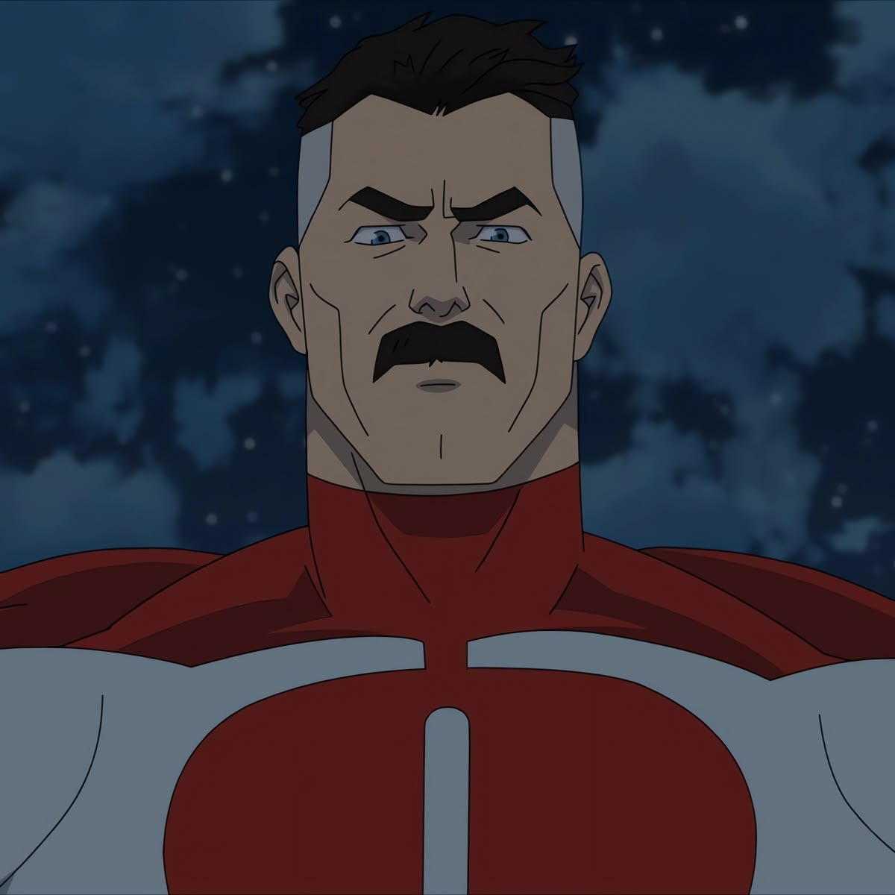
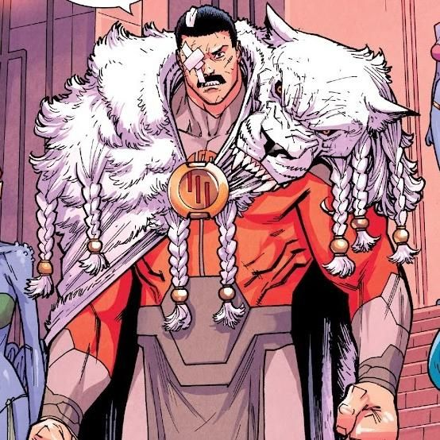
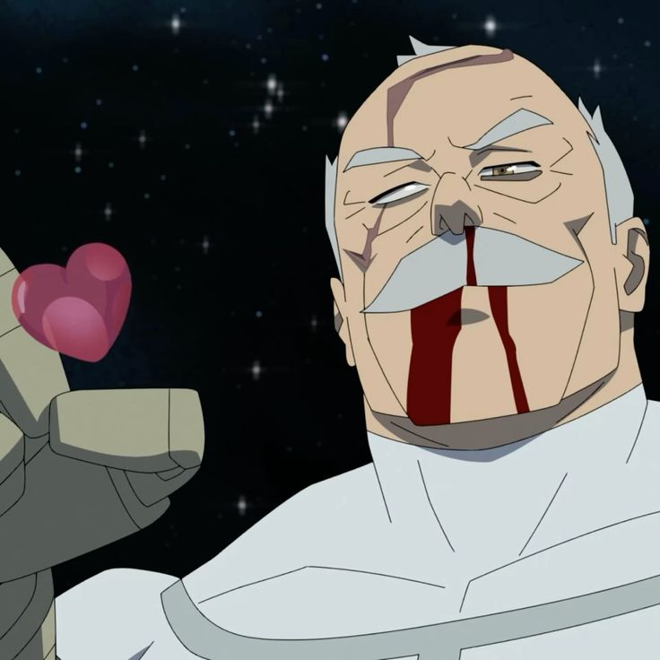

Personagens

Mark Grayson — Invencível
Mark é filho do famoso herói Omni-Man e começa a desenvolver seus poderes na adolescência. Ele precisa equilibrar a vida de herói com a escola, os amigos e os relacionamentos enquanto descobre verdades perturbadoras sobre seu pai e sua herança alienígena Viltrumita.

Omni-Man — Nolan Grayson
O herói mais poderoso da Terra e pai de Mark. Nolan parece o herói perfeito, mas esconde segredos sombrios sobre sua verdadeira missão no planeta. Sua revelação no final da primeira temporada chocou fãs do mundo inteiro e redefiniu a série.

Grand Regent Thragg
Líder supremo do Império Viltrumita e um dos guerreiros mais letais do universo. Thragg representa uma das maiores ameaças que Mark já enfrentou, com força e velocidade que rivalizam com qualquer herói. Frio, calculista e absolutamente implacável.
Battle Beast
Um dos lutadores mais brutais do universo, Battle Beast vive apenas para encontrar oponentes dignos de seu nível. Ele derrotou praticamente todos os heróis da Terra sem se esforçar, tornando-se um dos personagens mais temidos e aclamados da série.

Conquista
Veterano Viltrumita enviado para testar Mark Grayson. Conquista é experiente, calculista e brutalmente eficiente em combate. Suas batalhas contra o Invencível estão entre as mais violentas e memoráveis de toda a série.